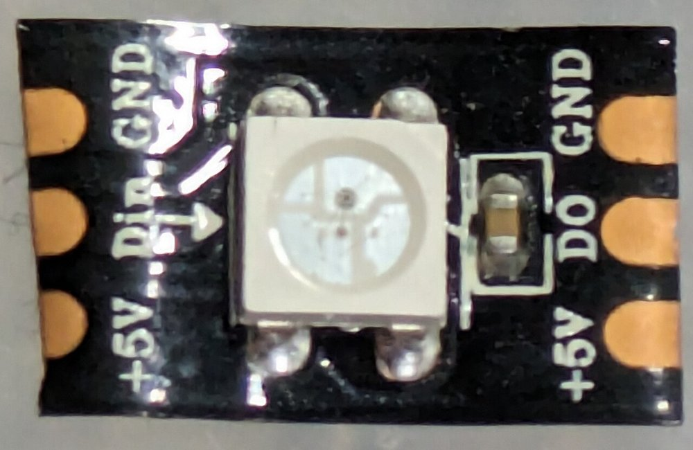
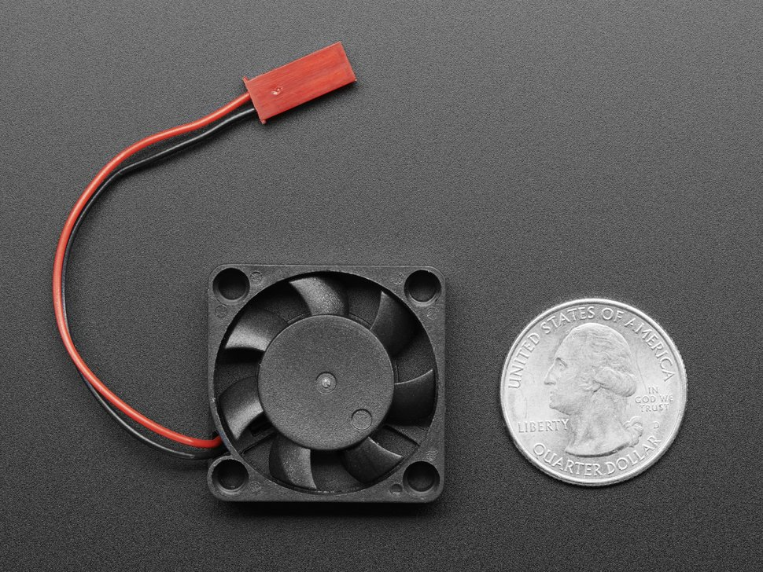
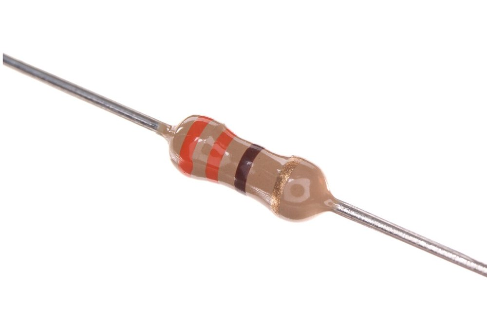
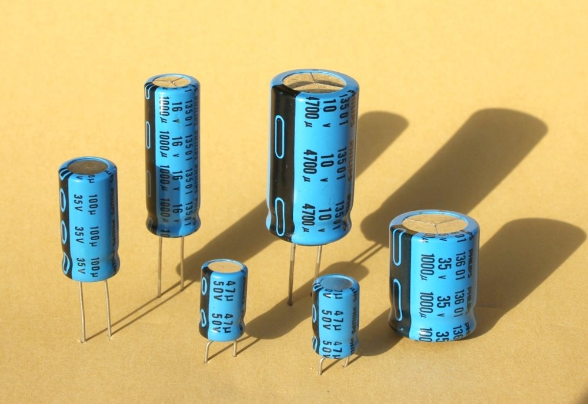
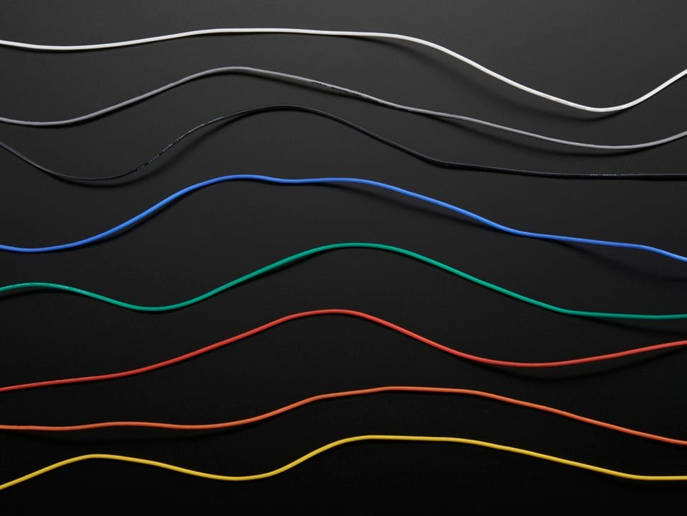
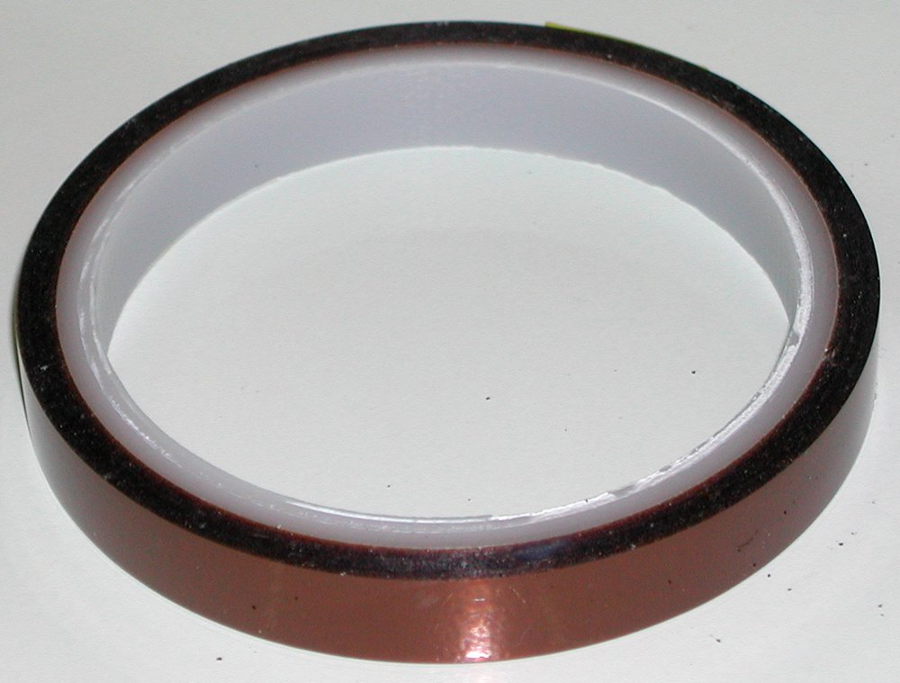
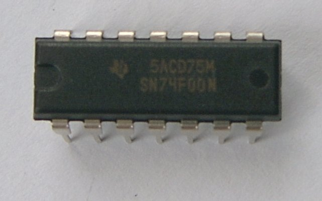
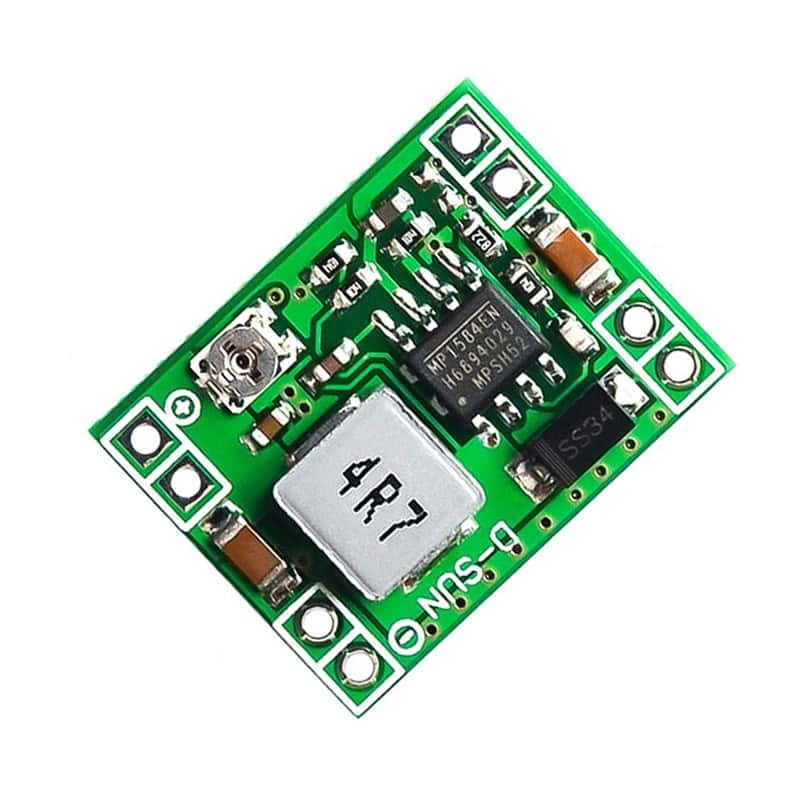
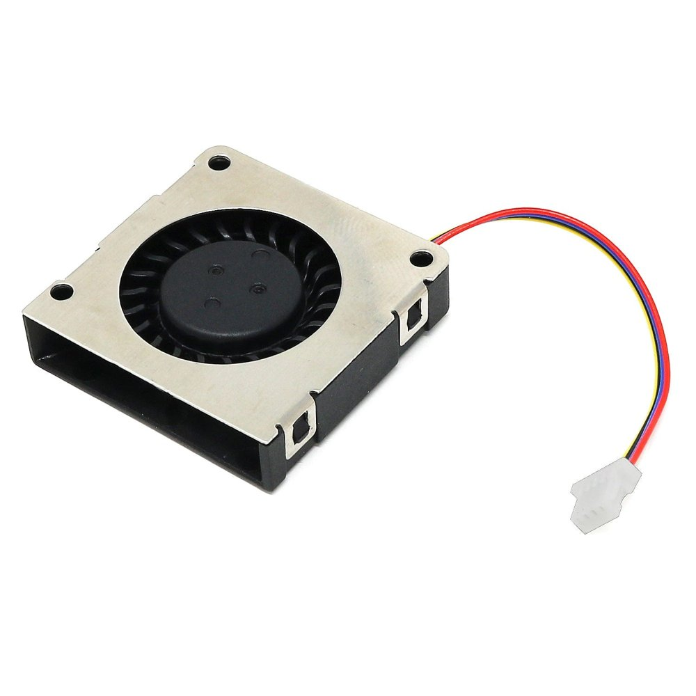
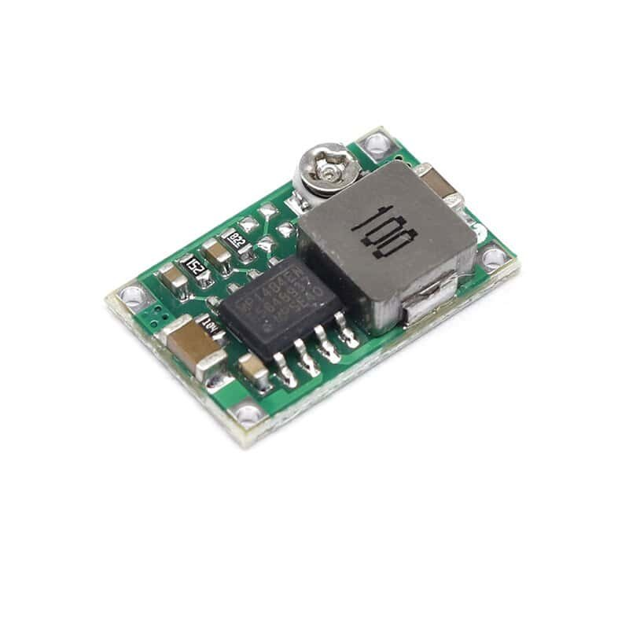

Starling 2 Max — shopping list
Quantities cover both drones
Each item has its own card on the following pages
Sim Lim Tower 10 Jalan Besar · components · most shops close ~7:30 pm
| | Item | Qty | Key spec |
|---|
| ☐ |  | 1. Addressable LED strip | 1 metre | WS2812B, 5 V, 60 LED/m, ≤ 10 mm wide, bare, 3 wires |
| ☐ |  | 2. Cooling fan (+ backup blower) | 2 square fans + 1 blower | 30×30×10 mm, 5 V, 2 wires, ≤ 0.15 A; + 3010 blower |
| ☐ |  | 5. Resistors | 10 | 330 Ω (or 470 Ω), 1/4 W |
| ☐ |  | 6. Capacitors | 4 × 470 µF + 4 × 100 nF | 470 µF 10–16 V electrolytic + 100 nF ceramic |
| ☐ |  | 7. Silicone hook-up wire | ~2 m each, 3 colours | 26 AWG silicone, stranded, 3 colours |
| ☐ |  | 8. Kapton tape + heat-shrink | 1 roll + assortment + 20 cm clear | Kapton ~10 mm; heat-shrink 1.5–6 mm + 15–20 mm clear |
| ☐ |  | 4. Level-shifter chip | 2 (+1 spare) | 74HCT125, DIP-14 |
| ☐ |  | 3. 5 V step-down (buck) module | 2 (+1 spare) | MP1584 (or Mini-360), 5 V out, ≥ 1 A |
Sim Lim Square 1 Rochor Canal Road · hobby / FPV · next door
| | Item | Qty | Key spec |
|---|
| ☐ |  | 9. Propellers | at least 2 sets of 4 | Gemfan 7037-3: 7 in, 3.7 pitch, 3 blades, 5 mm hole |
Bring
This sheet (prices go on the price log, page 8) · the printed prop gauge and 30 × 30 × 10 fan block · a ruler or calipers
Every purchase
Ask for an itemised receipt with the shop's name and GST number. Compare two or three shops before buying.
Why a buck module and a chip?
The LED strip and fan get their own 5 V supply (item 3), so a wiring fault on an arm can't take down the flight computer. The chip (item 4) makes the LED data signal strong enough for a 5 V strip.
1 · LED strip
Starling 2 Max parts
1Addressable LED strip Sim Lim TowerBuy: 1 metre
covers both drones (2 × 16 LEDs) with spares
One bare WS2812B segment: 3 pads at each cut (+5V, Din/DO, GND)
Photo: John McMaster, Wikimedia Commons, CC BY 4.0
Ask for“Do you have WS2812B addressable LED strip, 5 volt, 60 LEDs per metre, the narrow bare kind without the silicone sleeve? The newest version, V5, if you have it.”
| Spec | Must be | Why |
|---|
| Type | Individually addressable, single data wire: WS2812B (or SK6812) | The drone sends one data signal that sets each LED separately |
| Wires | 3: +5 V, data, ground | 4-wire strips need a clock line the drone doesn't have |
| Voltage | 5 V | 12 V strips won't light |
| LED spacing | 60 LEDs per metre (16.7 mm apart) | 4 LEDs fit on each ~75 mm arm |
| Width | 10 mm or less; 5 mm “narrow” is ideal | The arms are about 10 mm wide |
| Finish | Bare (IP30), no silicone sleeve or tube | A sleeve makes it ~14.5 mm wide and heavier |
| Colours | RGB is fine; RGBW (SK6812) also works | Software handles both |
| Chip version | WS2812B V5 preferred, if the shop knows | Accepts the drone's 3.3 V data even on a 5 V supply |
✗ Do not buy: APA102, DotStar, SK9822 or WS2801 (4 wires) · WS2815 (12 V) · Non-addressable RGB strip (whole strip one colour) · Silicone-sleeved or tube “waterproof” strip · 30 LEDs per metre (only 2 fit per arm)
✓ Check: Hold the strip against a ruler: 10 LEDs should span ~167 mm, and the width must be ≤ 10 mm.
2 · Cooling fan
Starling 2 Max parts
2Cooling fan (+ backup blower) Sim Lim TowerBuy: 2 square fans + 1 blower
one fan per drone; the blower is a backup if the shroud can't feed the gaps
Shape shown is 8 mm thick: buy 30 × 30 × 10 mm
Photo: Adafruit (product 3368)

Backup blower: side outlet. Must be 30 × 30, 5 V, 2 wires
Photo: The Pi Hut
Ask for“A 30 by 30 by 10 millimetre DC fan, 5 volt, two wires only. And a 30 millimetre blower fan, 5 volt, also two wires.”
| Spec | Must be | Why |
|---|
| Size | 30 × 30 × 10 mm (“3010”) | Fits the 36 mm-wide board stack; the 10 mm-thick version pushes harder through the 2 mm gaps |
| Voltage | 5 V DC | The drone's fan port gives 5 V; a 12 V fan barely turns |
| Wires | Exactly 2: red (+) and black (−) | Speed is controlled by switching the ground; 3- and 4-wire fans stutter or won't start |
| Current | 0.15 A (150 mA) or less on the label | The fan port is limited to ~0.4 A including start-up |
| Bearing | Ball or fluid / hydraulic (“FDB”) | It will vibrate; plain sleeve bearings wear out |
| Plug | Any | Cut off: the fan is soldered to the buck module (item 3) |
| Backup blower | 30 × 30 × 10 mm blower (“snail shell”, side outlet), 5 V, 2 wires, ≤ 0.15 A | Pushes harder into a single narrow gap |
| Reference part | Sunon MF30100V1-1000U-A99 (5.5 CFM, 0.12 A) | Any brand matching the rows above is fine |
✗ Do not buy: 12 V or 24 V fans · 3-wire (tacho) or 4-wire (PWM) fans · 25 mm or 40 mm sizes · Sleeve-bearing fans
✓ Check: Compare against your printed 30 × 30 × 10 mm reference block.
3–4 · Buck module and level shifter
Starling 2 Max parts
How these are used: the buck module turns the battery's 12–16.8 V into 5 V for the LED strip and the fan, separately from the flight computer. The 74HCT125 lifts the drone's 3.3 V LED data signal to 5 V.
35 V step-down (buck) module Sim Lim TowerBuy: 2 (+1 spare)
one per drone: powers the LED strip and the fan
MP1584EN (~22 × 17 mm)
Photo: Kunkune

Mini-360 (~17 × 11 mm)
Photo: Kunkune
Ask for“An MP1584 step-down buck converter module. A Mini-360 is also fine.”
| Spec | Must be | Why |
|---|
| Output | 5.0 V, 1 A or more (MP1584 ~3 A) | Powers the LED strip and fan, separately from the flight computer |
| Input | Accepts ≥ 17 V (MP1584 28 V, Mini-360 23 V max) | Runs from the 4S battery, up to 16.8 V |
| Size | MP1584 ~22 × 17 mm; Mini-360 ~17 × 11 mm | Light; mounts at an arm root |
| Adjustable? | Trim screw: set 5.0 V with a multimeter before use | Often shipped at another voltage |
✗ Do not buy: Linear 7805 regulators (would burn ~6 W as heat) · Big LM2596 boards (heavy)
4Level-shifter chip Sim Lim TowerBuy: 2 (+1 spare)
Shown: a 74-series DIP-14 chip. Buy 74HCT125
Photo: Stefan Riepl, Wikimedia Commons, public domain
Ask for“74HCT125, the quad buffer chip, in DIP-14.” (The letter T matters.)
| Spec | Must be | Why |
|---|
| Part | 74HCT125 (or 74AHCT125) | Raises the drone's 3.3 V LED data signal to 5 V for the strip |
| Package | DIP-14 (through-hole) | Easy to hand-solder onto a scrap of perfboard |
| With it | a 100 nF ceramic capacitor (item 6) and a small perfboard scrap | Standard decoupling for logic chips; keeps the assembly tidy |
✗ Do not buy: 74HC125 or 74LS125 (wrong input levels)
✓ Check: If there's no 74HCT125 anywhere: RS Singapore / element14 Singapore stock it online.
7–8 · Wire, tape, heat-shrink
Starling 2 Max parts
7Silicone hook-up wire Sim Lim TowerBuy: ~2 m each, 3 colours
red, black and one other colour
26 AWG silicone stranded wire
Photo: Adafruit (product 1970)
Ask for“26 AWG silicone wire, stranded, in red, black and one other colour.”
| Spec | Must be | Why |
|---|
| Gauge | 26 AWG | Enough for the LED current; thin enough for the ESC's small solder pads |
| Insulation | Silicone | Doesn't melt back while soldering; flexes with vibration |
| Core | Stranded (many fine strands) | Solid core cracks with vibration |
✗ Do not buy: PVC hook-up wire · Solid-core wire
8Kapton tape + heat-shrink Sim Lim TowerBuy: 1 roll + assortment + 20 cm clear
Kapton tape: amber, thin
Photo: Jérôme, Wikimedia Commons, CC BY-SA 3.0
Ask for“Kapton tape, the amber polyimide kind, about 10 millimetres wide. A small heat-shrink assortment, 1.5 to 6 millimetres, and a short length of clear 15 to 20 millimetre heat-shrink.”
| Spec | Must be | Why |
|---|
| Kapton width | ~10 mm (6–12 mm OK), polyimide, amber | Wraps the strip ends onto the 10 mm arms; heat-proof, holds under vibration |
| Heat-shrink | 1.5–6 mm assortment, plus 15–20 mm clear | Small: solder joints. Large: insulates the buck module and chip, since carbon fibre conducts |
✗ Do not buy: Electrical PVC tape (adhesive creeps) · Heat-shrink in large sizes only (> 10 mm)
9 · Propellers
Starling 2 Max parts
9Propellers Sim Lim SquareBuy: at least 2 sets of 4
each set is 2 clockwise + 2 counter-clockwise; props are consumables
The bag to look for: Gemfan 7037-3
Photo: OddityRC, Gemfan 7037-3 listing

7037-3: three blades, 5 mm centre hole
Photo: OddityRC, Gemfan 7037-3 listing
Ask for“Gemfan 7037, three-blade, 7 inch, 5 millimetre centre hole.”
| Spec | Must be | Why |
|---|
| Diameter | 7 inch (178 mm) | Same as the drone's stock props |
| Pitch | 3.7 (3.5 acceptable) — never higher | Higher pitch overheats the small motors and the ESC |
| Blades | 3 | Matches stock |
| Centre hole | 5 mm (M5) | Fits the motor shaft |
| Hub | ~7 mm thick | Fits the prop nut |
| Rotation | Set must include both CW and CCW | Two motors spin each way |
| Label | “7037-3” or “7×3.7×3” | First number = diameter, second = pitch |
✗ Do not buy: 7040, 7042, 7045 or any “freestyle” prop (pitch too high) · Two-blade props (e.g. 7035-2) · 6 or 8 inch props · Props without a 5 mm centre hole
✓ Check: Lay it on your printed prop gauge: tips reach the outer ring; the hole fits the gauge's 5 mm hub.
Genuine ModalAI part: MRP-D0012-1-00 (US$29.99 / 4), online only.
Price log
Compare two or three shops before buying
| Item · qty | Shop / unit |
Exact item seen | Price S$ | Bought? |
|---|
| 1 Addressable LED strip 1 metre | | | | |
| | | |
| 2 Cooling fan (+ backup blower) 2 square fans + 1 blower | | | | |
| | | |
| 5 Resistors 10 | | | | |
| | | |
| 6 Capacitors 4 × 470 µF + 4 × 100 nF | | | | |
| | | |
| 7 Silicone hook-up wire ~2 m each, 3 colours | | | | |
| | | |
| 8 Kapton tape + heat-shrink 1 roll + assortment + 20 cm clear | | | | |
| | | |
| 4 Level-shifter chip 2 (+1 spare) | | | | |
| | | |
| 3 5 V step-down (buck) module 2 (+1 spare) | | | | |
| | | |
| 9 Propellers at least 2 sets of 4 | | | | |
| | | |
Where to go
Call ahead: stock and unit numbers change
Sim Lim Tower 10 Jalan Besar — electronic components
| Shop | Unit | Try here for |
|---|
| J.C.W. Electronic | — | Fans (item 2) — call first; LED strip |
| Sun-Light Electronics | #03-09 | WS2812B LED strip (item 1) |
| Davjones Technology | #B1-47/11 | Buck modules, 74HCT125 (items 3–4) |
| Continental Electronic Enterprise | #B1-25 | Resistors, capacitors, wire, tape, heat-shrink (items 5–8) |
From a shop directory about two years old. No online listing confirms the fans, blower or 74HCT125 in stock anywhere in Sim Lim — call first.
Sim Lim Square 1 Rochor Canal Road — hobby / FPV
| Shop | Unit | Try here for |
|---|
| Hobby Square | #02-60 | Propellers (item 9); also silicone wire (item 7). Listed hours Mon–Sat 12:30–7:30 pm |
If Hobby Square has no 7037 props
| Shop | Where | Notes |
|---|
| Sky Hobbies | Jalan Sultan | skyhobbies.com.sg · large HQProp stockist |
| Helicopter Smartfly | Queensway Shopping Centre | smartfly.com.sg · Mon–Sat 12–7 pm, Sun 3–7 pm, closed Wednesday |
| Rotor Hobby | Kitchener Complex, French Road | shop.rotor.com.sg · +65 6296 3686 |
| OddityRC | Paya Lebar Square (pickup) | oddityrc.com · stocks Gemfan 7037-3 online; allow 5–8 days |
Other fallbacks
| Fans | Amicus, 8 Ubi Road 2 #03-13 Zervex · +65 6980 6783 · 5 V fans by order; call first |
| Online, Singapore | Cytron SG and Kuriosity.sg (LED strip, buck modules) · RS Singapore and element14 Singapore (74HCT125, Sunon fans; fast delivery) · DigiKey (a few days) |
| Online, blower | 3D-printer parts sellers and local Shopee sellers (“3010 blower 5V”) |